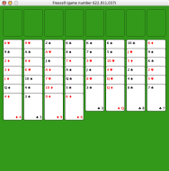

Ayuda de Freecell
Ayuda de Freecell
Freecell es un juego tipo solitario de cartas en el cual es posible ganar casi todos los juegos con la suficiente habilidad. La Mesa consiste en cuatro celdas libres (o free cells) arriba a la izquierda, cuatro casas arriba a la derecha y ocho columnas abajo.

Una baraja revuelta se reparte alrededor de las ocho columnas. El propósito es mover todas las cartas de las columnas a sus casas. Las casas tienen que estar en orden de rank, comenzando con los aces, luego dos, tres, etcétera.
Cartas se pueden mover de columna en columna obedeciendo ciertas reglas: Solo se puede mover una carta encima de otra con la condición de que estén en orden de rank y asimismo que las cartas sean de un color contrario. Por ejemplo: puedes mover el cinco de corazones encima del seis de trébol.
Por último, las cartas se pueden mover hacia las free cells hacia arriba a la izquierda del tablero. Cada free cell puede contener una carta a la vez. Las columnas vacías actúan como free cells también.